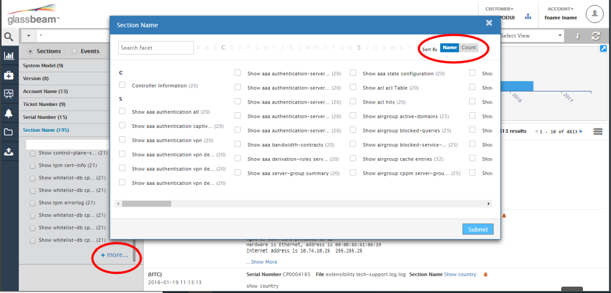
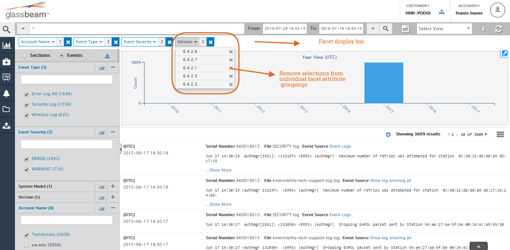
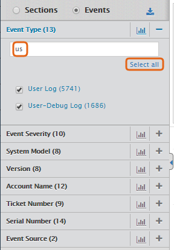
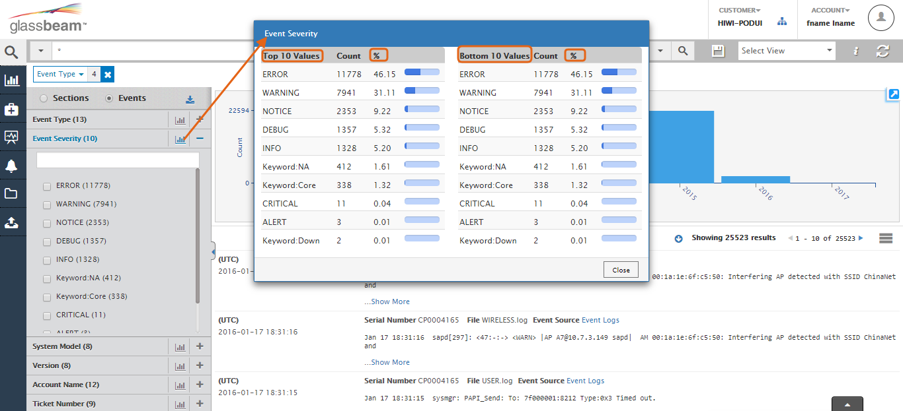

Sorting of Facet values by Name and Result count
1. The facets sorts the result under it in a descending order of the count of results for each facet value
2. When the number of results is more than 25, a show more option is displayed to see all the facet values in a new window
3. You can sort the results in that window either by name or by search result count.

To access additional facet values, click any facet attribute and scroll. As you scroll down, you will see the +More option. Click to display additional values and view or select one or more options you want displayed for that facet. Click Submit to complete the action.
Filter Group Facet Selections from Facet Display bar
If your selected facet has more than one value, then it is grouped together under that facet’s name. You can view selected values by clicking on the dropdown arrow. You can operate on all the facet values as one entity or work on them as individual entities. To remove a single value from the facet group, go to the individual facet and click the dropdown arrow, from the selections displayed you can remove the attributes you do not want in the current search result. Once you have removed the selection, the results are automatically refreshed with the current set of selections.

Download Facets as .CSV File
You can use the Download Facets as a .CSV file to view and analyze offline the facets. This is useful when you have hundreds of facets for a particular attribute and viewing the entire UI can be cumbersome.
Select Multiple Facets
When you enter alphanumeric values in the search bar in any of the facet attribute list, the Select All option is displayed. You can use the Select All option to select more than one facet attribute as filter to the search result.
Every time one of the values in the facet is selected, the filter is immediately applied and the UI reflects the changes. This helps you interact with Explorer with minimal clicks.

Facet Analytics of Attributes
Every facets attribute contain a chart icon. Use this to understand the overall count of the attributes and the percentage of the attribute value for a particular facet. For instance, if you want to know the top 10 values in the Event Severity facet go the face in the pane and click the chart icon. A pop up dialog displays plotting the trends. For instance, from the below diagram, you can see the ERROR facet attribute is among the top 10 attributes contributing to the Event Severity facet. From this you can infer that the ERROR related events are among the highest collection of discrepancies in the log bundle. This in turn help understand the search results better and can lead to a faster troubleshooting of a known or unknown issue.

Custom Facet Ordering
The order of the facets can now be customized per customer. The order of the attributes within each facet is now sorted by count, in descending order.
Download Facet and Its Attributes Data as Excel File
You can download both Sections or Events related facet and its attributes as an Excel file. You can then use that Excel file to conduct offline analysis. Using the report can help you identify the log section and attribute count of section or event. For instance, from the below example, you can see, that in the AUDITTRAIL Log, there are over 4435 Event Type facet. This indicates where in the log you can find key parameters that may require closer scrutiny.
Here is how the data is organized in the Excel report.
|
Facet Name |
Facet Identifier |
Number of results |
|
---------------------------------- |
---------------------------------- |
---------------------------------- |
|
Event Type |
AUDITTRAIL Log |
4435 |
|
Event Type |
User Log |
5741 |
|
Event Type |
SAPD Log |
160 |
|
Event Type |
Security Log |
6187 |
|
Event Type |
Error Log All |
10689 |
|
Event Type |
STM_AP Log |
1472 |
|
Event Type |
Errors Log |
4872 |
|
Event Type |
Wireless Log |
7407 |
|
Event Type |
STM Log |
453 |
|
Event Type |
User-Debug Log |
1686 |
|
Event Type |
DHCPD Log |
15 |
Created with the Personal Edition of HelpNDoc: Easily create PDF Help documents